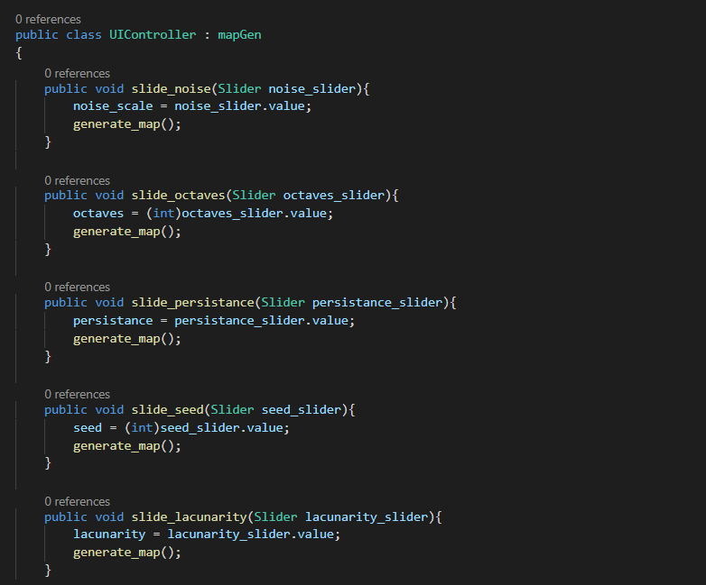
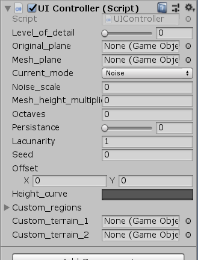
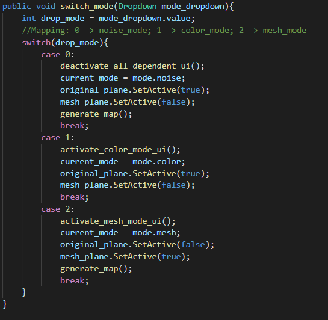

UI Improvements (11/4/2020)

For this week, I worked on improvements to the UI: both code organization and layout of components on the tool.
Access most recent webbuild here: Click Link
UI Improvements (6 hours)
During this sprint, I watched several videos on user interface development. One of the first steps I took to improve the current UI was to move any code specific to its operation to be in its own class/script. By using this script, UIComponents.cs, I can keep my main file for generating meshes clean, and group functions together by purpose.
It took a few hours of debugging to resolve issues tied to this change. Some variables are necessary for my main class to generate the maps. To allow my UIComponent script to access these variables, I use the "protected" keyword on those variables and make the UIController a child class. I also had to reassign the script to the Canvas to prevent duplicate references in the unity editor. The variables used to be public, but now, will be private to the UI class.
Furthermore, I cleaned up the UI so that functions specific to a particular mode only show up when that mode is selected.
I hope that this change allows for the tool to be more straightforward to use. I also got rid of the button for generating meshes; now, if you switch into mesh mode, you will the mesh will automatically be generated based on the existing color map.
My next step was to implement a way that the user can add multiple custom terrain to their map. Currently, you can only have 2 custom terrains. I hoped to find an easy way for the user to add much more. To do this, I leaveraged Unity's "scroll rect" script:
The scroll rect allows for multiple ui components to be accessed via a scrolling mechanism, while keeping the canvas from being cluttered. This part took alot of trial and error to get right: most of my tiem was spent moving around the scroll rect, and the heirarchy of components to get everything to fit onto the canvas. I also faced issues with the custom terrain selectors becoming "invisible".
Eventually, I was able to get the custom objects working within the scroll rect area. After adjusting the position of the scroll view, I added a bar that can be click to examine the custom terrain selectors.
Now that the scroll rect is immplemented, I can add the ability for multiple custom terrain to be selected. I can also start implementing additional features for the tool: one of which is the ability to procedurally place objects onto the map. This will be coming up next week.